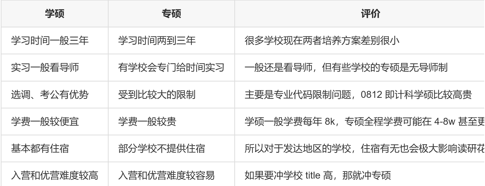

保研是信息战。
接触更多优质的人和优质的圈子，再加上自身努力，便可改变你的命运。
# 本校学长（浙大软院）——https://www.cnblogs.com/cilinmengye/p/18448662
- 强
Com指的是研招办 > 老师，弱Com相反。强Com需要基础较为扎实，比如rk和本科院校、英语四六级。弱Com可以用简历陶瓷老师。 - 准备机试需要刷算法题。
- 四非不是
rk1都是一样。 - 导师不回信才是正常情况，多陶瓷才是王道。
- 面试普遍都要英语自我介绍 1 分钟。
# 华东师范 ——https://www.starryfk.com/else/record-my-2023-postgradute-recommendation.html#directory01325548830423777223
- 学硕专硕区别：

- 不要去投歧视双非严重的学校。
- 基本不要双非的学校：武汉大学、四川大学、上海交通大学、复旦大学、北京理工大学、同济大学、南京大学、华中科技大学、哈尔滨工业大学、中国科学技术大学（18 年有个老学长进去过，现在不太清楚）、中山大学、北京航空航天大学。
- 有鸽双非历史的学校：天津大学、中南大学、东南大学、北京交通大学、湖南大学、西安交通大学、南开大学、西北工业大学（西工大 23 年有个
rk第一的学长还是进去过）。 - 对双非四非友好的学校：吉林大学、东北大学、华东师范大学、大连理工大学、电子科技大学、重庆大学、山东大学、国防科技大学（有个 19 级学长进去过）、厦门大学、浙大软院、南大软院、中科大科学岛、苏研院、西安电子科技大学、北京邮电大学。其中有相当一部分是弱
com学校，推荐提前联系导师。 - 海投，应投尽投，不漏一校。
- 夏令营和预推免的资料应该提前准备好，按学校分类放到不同文件夹。
- 信息渠道：学校官方网站、学校的研招公众号、保研机构公众号中的免费资讯，注意留意开营信息、绿群（保持交流也是督促自己、 保持热情的方式）。
- 并不是没过夏令营的初审就不能继续投这个学校。
- 浙大软院最近是 “点击就送”。
- 浙大软院夏令营比较长，从 6 月 27 日到 7 月 15，认真准备每个环节是有很大机会拿到
offer的。 - 夏令营 —— 凭借好看的简历进营完成项目，得到优营。预推免 —— 机试 + 面试。一些学校有了夏令营优营后，预推免初审必过。
- 有些学校老师在面试时可以看到机试成绩，会影响面试打分。当然有些学校的老师可能无法看到机试成绩。
- 面试内容可能还会有人际关系、政治问题。
- 不同组面试的侧重点不同，可能有的抓项目、有的抓专业课。
- 如果实在很想去某个学校的话，可以联系导师取得优势，最好就是投特别想去的学校或者导师。
- 预推免还是没办法的话，就真的无缘这个学校了。
- 最好不要同时投一个学院的导师，特别是同一个实验室的导师，会显得非常没有诚意。
- 联系导师一定要提前，首先可以通过邮件联系到老师，接着如果看到没有明确拒绝的话可以进一步邮件索要微信。加微信成功后，可以问面试的形式大概如何，可以围绕学术进行交流，必要时候可以保持和导师的交流。不要嫌导师话少，这并不代表导师对你的兴趣不大，只要导师还在和你交流，那么就还是有希望的，导师说不定可以在预推免的初审和后面的面试捞一把。
- 预推免的面试部分，会比较刻意考验英语口语的能力，建议可以利用备考雅思口语的方式来锻炼自己的口语水平。
- 国家推免系统在 9 月 28 日开放志愿的填报，在 9 月 23 日或 9 月 22 日左右可以进入系统确认保研资格和个人信息的填写和完善，如果发现自己没有显示具有保研资格，也不用着急，学校并不需要一开系统就上传推免名单的，耐心等待学校上传即可。
- 在推免系统中，有些个人信息也是学校提交的，如果你发现信息不对，就要及时联系学校进行修改，所以也因此要提前进系统核对自己的信息，不要等到 928 再急急忙忙找学校修改。
- 推免需要缴费。
- 9 月 28 日凌晨开始填报志愿，然后招生学校在 9 月 28 日中午 12 点进入系统进行操作。
- 在系统中填报志愿，有三个平行志愿可以填写，不需要一次全部填写三个。填报好一个志愿后，48 小时内就不能再更改了，除非是学校拒绝了你的志愿，你就可以修改该行的志愿到其他学校。
- 对于没有
offer却在系统中填报了某校，一般来说都是采取默认拒绝的形式，也有不拒绝也不接受的，基本等于是浪费了一个志愿填报的位置了。 - 如果学校接受了你的志愿，会发送复试通知，这时候需要点击确认来告知学校愿意参加复试。
- 可以同时接受多个学校的复试考核。
- 如果参加过夏令营或预推免，有了
offer，复试可以直接通过，学校会发送复试通过的通知，并且发送待录取通知。 - 复试通知和预推免通知都有一定的时间限制，超过时间不接受，学校就会撤回通知。
- 一旦接受了待录取通知，那么就结束了推免，无法再撤回，也无法再接受其他学校的复试和录取通知。
- 要留意学校要求的最迟确认复试通知和最迟确认录取通知。
- （感觉可以参考一下这个贴的佬学习英语的方法）
# 北京大学深圳研究院 ——https://zhuanlan.zhihu.com/p/548660976
- 强
Com的夏令营较侧重rk，参加弱Com的夏令营需要提前套磁老师，然后老师往学校推荐自己入营。 - 大多数夏令营通过机试 + 面试来确定优营，机试推荐复习王道的机试指南。
- 夏令营也可能考察专业课和数学，所以也要做相关的准备。
# 计算所 ——https://sumsky.top/2021/10/13/baoyan-series-1/
- 可以关注相关学院的研招群。
- 申请直博项目或者对于导师水平和方向比较看重的话，请务必抓住夏令营难这一难得机会，很多时候预推免即便上岸，也只能挑夏令营被选过一轮之后剩下的老师了。
- 不确定是否能够拿到推免资格依然可以参加夏令营和预推免，只要用自己的成绩让招生单位相信你预期可以获得推免资格即可。
- 预推免和夏令营都可以报多所学校，只是要注意是否时间会发生冲突。
Offer本质上只是一种非正式的 “契约”，因此无论是否签承诺书，这类承诺都不具备法律效力。- 尽管学校已经给了
Offer，确实有学校会鸽学生的情况。 - 不过学校鸽学生这种现象对于学校的声誉是一个重大的打击，因此绝大多数学校一般都不会做这种事情。
- 导师 / 课题组鸽学生的现象其实比学校鸽学生的现象更为普遍， 比如说在夏令营联系好了的实验室，在九推时突然以 “今年名额减少了” 的理由不再承诺一定会录取。
- 推免系统开放前，尽量只保留一个
offer，能早放弃尽量早放弃（存疑） - 毕业要求中，一般学硕略高于专硕，有些学校对于两种类型的硕士同等对待，但是毕业出去学硕的待遇一般比专硕好。
# 西安电子科技大学杭州研究院 ——https://zhuanlan.zhihu.com/p/659154144
- 本科院校 >>> 专业排名 > 科研 > 竞赛 > 其他。前两者决定能否通过研招办的审核，后面几项决定能否拿到
offer。 - 科研实习看的是态度而非仅仅知识水平。
- 在拿到真正的
offer之前不要停止联系其他老师。 - 不建议手握多个
offer，只建议手里拿1~2个offer就够了。拿到更好的学校后，及时放弃当前的offer，别报名去不想去的学校，占用别人的机会。 - 四非双非友好学校：厦大、浙大海洋、浙大海宁、国防科大、西电杭、华东师范软院、吉大、东北大学、华东师范、大连理工、电子科大、重大、山大、南大软院、中科大科学岛、苏研院、北邮、浙软。

# 成电 ——https://fangkaipeng.com/?p=2103
- 有些弱
com甚至不看机试只看面试，甚至没有夏令营，只在预推免发offer，比如这个成电。 - 夏令营也有许多不同类型，有些夏令营是宣传性质，不发优营和
offer。一般夏令营在 5-6 月份申请，在 6-8 月份参营。一般的夏令营都有考核，常见的流程是机试、面试等、评选优营。而且，根据学校不同，优营的作用不同，有的可以直接作为offer，有的没有夏令营offer则不允许参加预推免。 - 预推免一般在 8 月末到 9 月 28 日之间。
- 大三寒假后就可以开始准备复习专业课了，4 月份之前可以准备个人文书材料，可以对个人的证明材料按学校分类归档。一般在 4-5 月份就可以对导师进行陶瓷。
- 可以按照
excel表收集和准备夏令营和预推免的材料，可以在大三下开学后就开始进行。 - 关于导师推荐信，手写大于打印，这种东西只是一个形式，有了就行，具体细节不会太重要。
Scanner Mini是IOS的一个扫描工具，可用于整理材料时，将纸质转换为电子。- 一般而言，专业课优先级为：数据结构 > 操作系统 > 计算机网络 = 计算机组成原理。对于数学课，线性代数 > 概率论 > 高等数学。
- 下面放上计算机专业国内高校天梯图（爱来自绿群）

- 非热门研究组，竞争压力：直博 < 专硕 < 学硕。
- 选组和导师可以参考：组实力（毕业去向、每年论文数量等）、组氛围、导师水平（头衔、
google引用、每年论文数等）、导师性格（是否push、是否pua、是否允许实习、他人口碑等） - 如果导师的论文大部分一作都不是学生而是他（她）自己，就需要慎重考虑。
- 可以从 '' 导师评价
.excel'' 文件中了解导师口碑。 - 学校官网可以看到导师的教育背景、主要成果和头衔。
- 陶瓷老师也可以分为稳和冲。一般大牛导师用来冲，最好提前去陶瓷（4-5 月），也不用太多准备，直接上，能收就血赚，不能收还有稳的老师去陶。稳的导师最好也是在夏令营前 1 个月左右陶瓷（其实最好就是在 5 月份左右）。
- 用于陶瓷的邮箱建议为：教育邮箱 >
gmail> 网易邮箱。 - 发邮件的时间建议为：早上
7：00，中午13：00。 - 可能一个组有多个导师，这时候就要注意同一个组建议同时只陶瓷一个导师，过段时间（一个星期左右）再陶瓷同组的下一个导师。
- 陶瓷前可以反复进行自我介绍的练习和项目介绍，这样可以保证嘴巴和脑子处于一个活跃的状态。
- 陶瓷过程其实没有那么正式，实际上就是在和导师有说有笑，比较轻松。
# 港中深直博 ——https://zhuanlan.zhihu.com/p/569696962
- 清深现在入营了的都是联系过的。
- 一般学校层次越高，对机试
or数据结构与算法的要求越高。 - 南大的夏令营是海营，机试比较杂。
- 计算所的导师联系导师很重要，就算没报名夏令营都能直接发
offer。 - 真诚和老师沟通很重要，即使在等待某个学校的答复，也要坦诚和老师说，老师会理解。所以，就算到时候去了其他的学校，老师也不会很怪罪，不少老师也会鼓励学生冲击更好的去处，并愿意保留一定的时间。
- 中国人大信息学院是鸽院，面试需要签保密协议。
- 不要完全相信老师的口头话语，公示的名单才是硬道理！
- 预推免
wl就算成功！临近开系统，真的很多学校 wl 候补到最后面，在候补名单就有希望。 - 敢于联系，一切皆有可能。
- 提前规划复习！填报系统挺费时间的，要留出足够多的时间准备起码考和各种填报、机试、面试！
# 有关港三的信息
(19 封私信 / 50 条消息) 计算机保研夏令营港三 - 搜索结果 - 知乎 (zhihu.com)